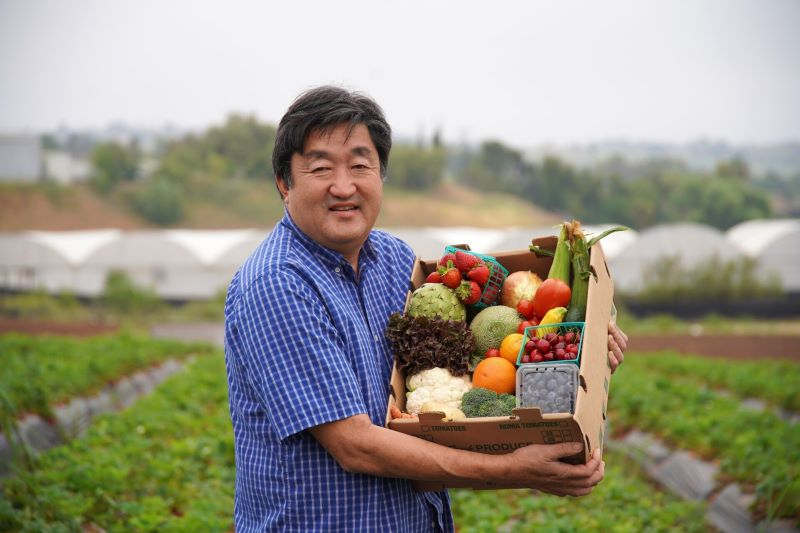

About Us
Bountiful is our name and Freshness is our game! In two-thousand-twelve Bountiful Foods started producing enough in their orchard and berry farm to soley suffice the company for the first time! We started in 1988 as a simple family orchard and we had a simple family values. We wanted to bring freshness to the world. The family remembers making their first shake from their first peach tree and truly their was nothing like the taste of a fresh Juicy Peach milkshake. Father Yasukochi Used some local honey to sweeten the flavor and in that home that night Bountiful Foods truly began!
Yasukochi Farm
It all started with father Yasukochi, He loved his farm and had a dream of raising his kids with the best freshest food possible. It took years for his first peach tree to grow but when it bore its first fruit the tree became a spectacale for his kids. Often They afterward were found snacking on a peach. Seeing his kid's joy Father Yasukochi decided to plant another twenty peach trees and he along side that planted twenty cherry trees and twenty apple trees. All of our products except for our protien isolate is grown fresh on the Yasukochi Farm!